Hardware, control & learning
Projects
Parallel-link platform
Sim-to-real locomotion
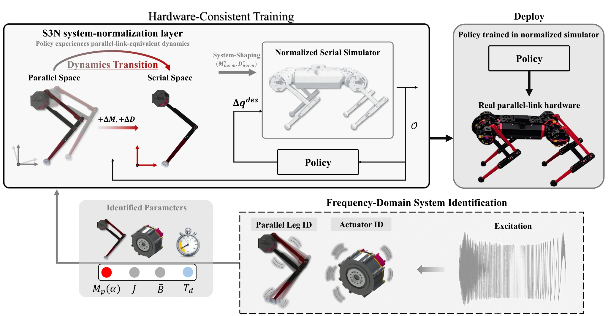
Earlier platform
Harmonic drive quadruped robot
Quad v1 · Harmonic drives at every joint
Cascaded disturbance observer
Body orientation control
Qualitative hardware comparison · ≥3 stance contacts · fixed Abad joints · roll/pitch control
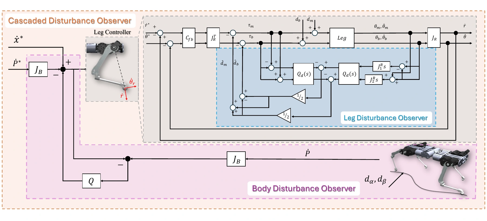
Control framework & experimental plots
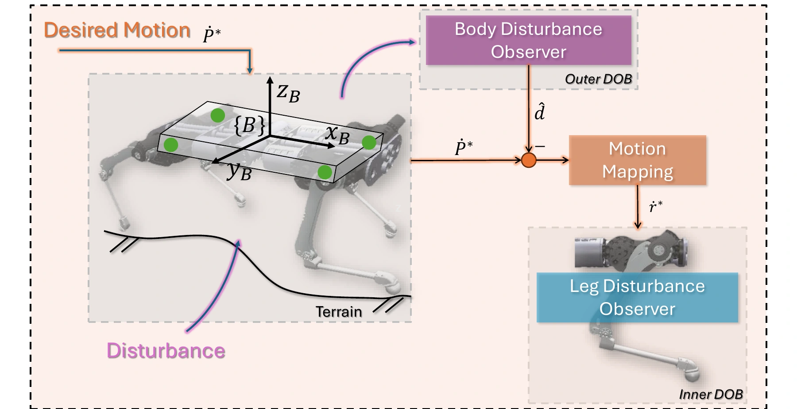
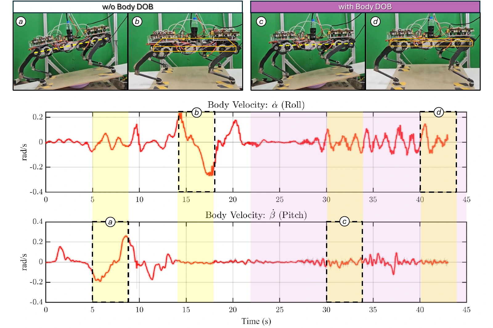
Frequency-domain modeling
System identification
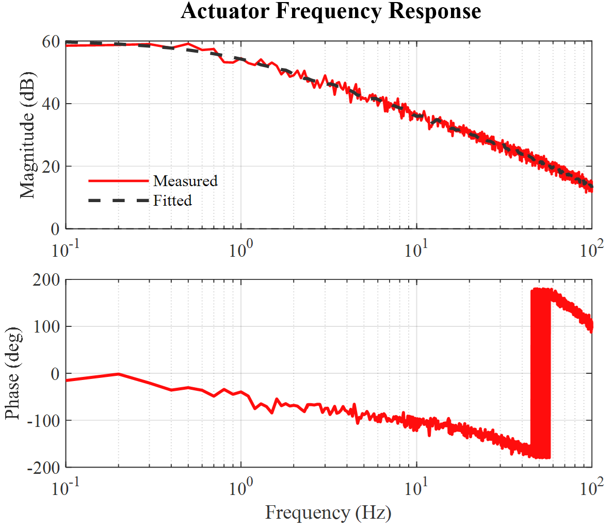
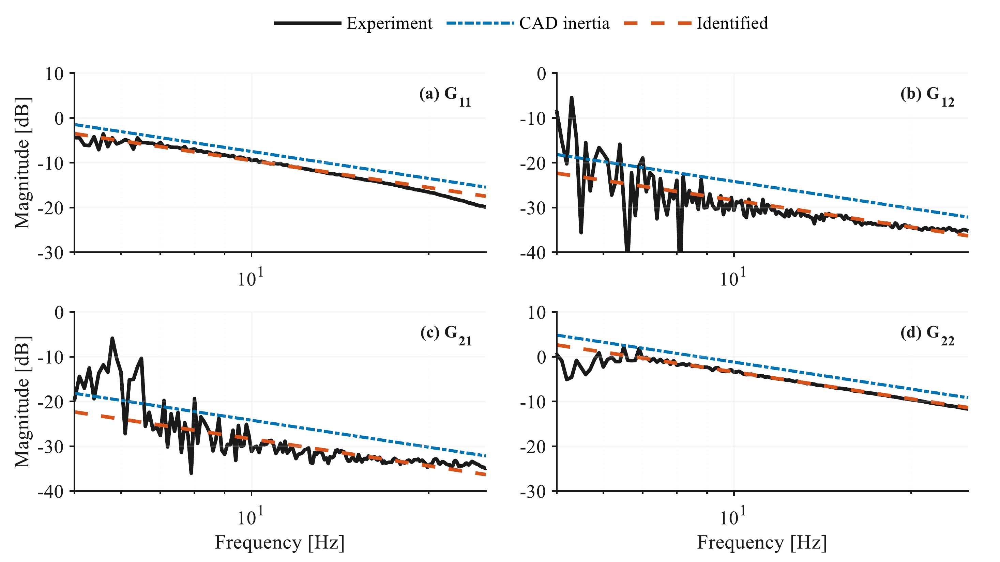
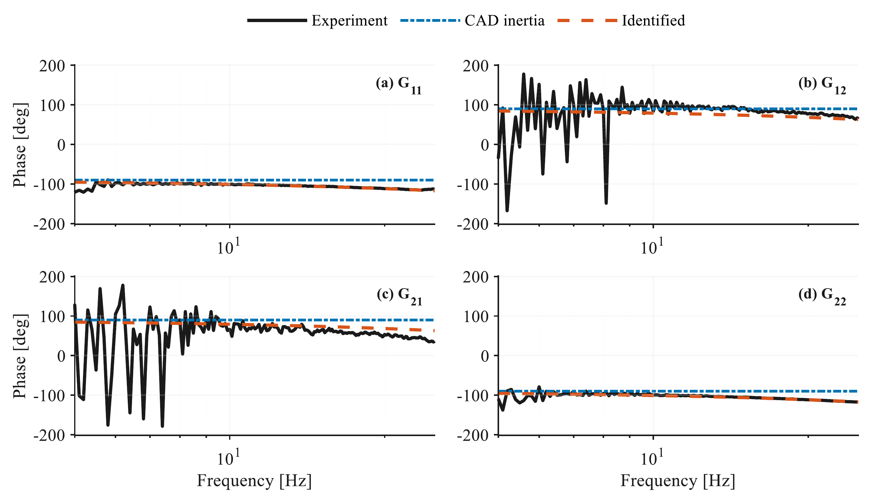
Parallel-link platform
Design & hardware
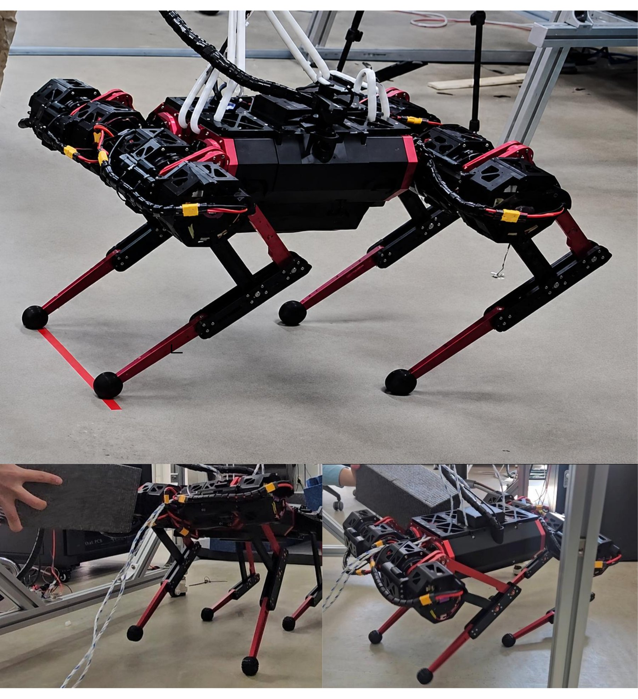
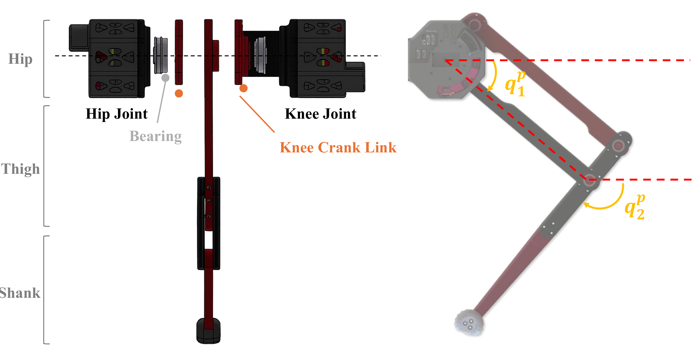
CAD, fabrication & structural analysis
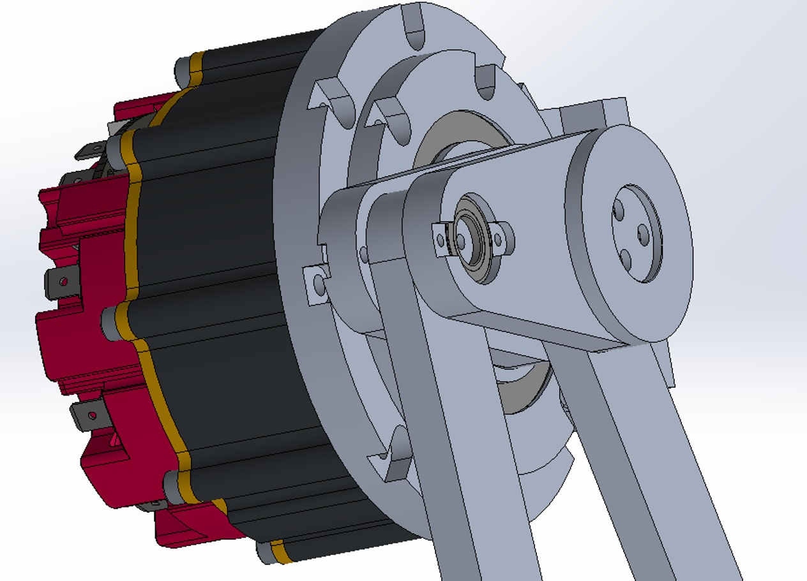
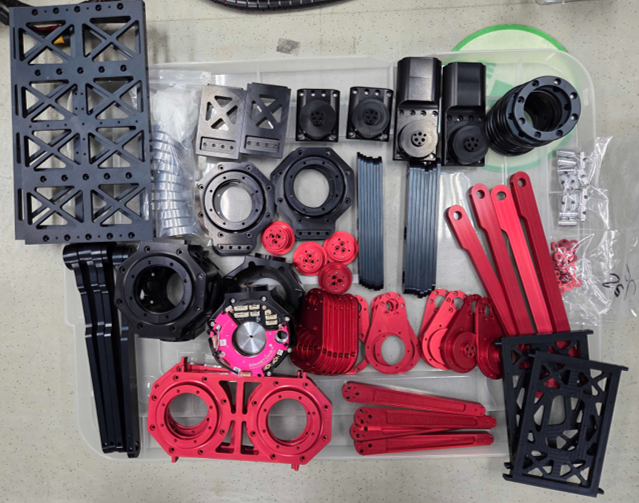
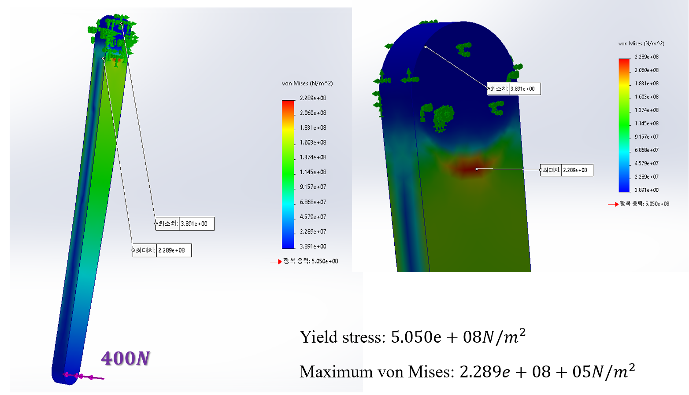
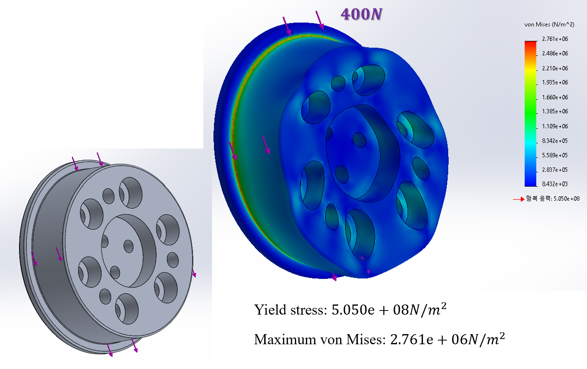
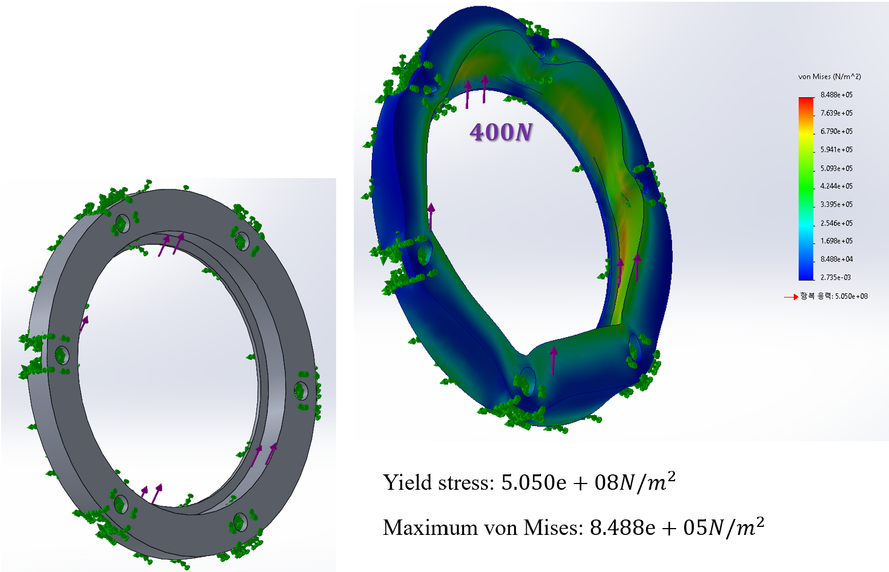
MuJoCo & Isaac Sim